Acre Phase 1
Phase 1 @ 22 acres / Limited plots available
Land you own.
A farm we manage.
A legacy that grows.
Own your piece of farmland in Yelandur, where professional farm management, sandalwood, seasonal fruits, flowers and integrated farming projects come together — creating something meaningful for today and valuable for generations.
Registered OwnershipProfessionally ManagedTransparent DocumentationOwner Farm Experience
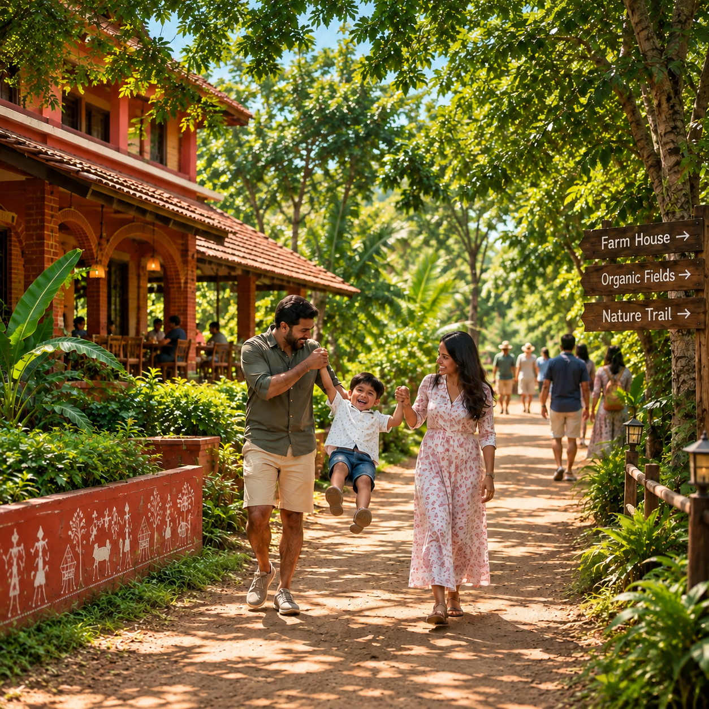
Where families grow together.A place your family can own, experience and pass forward.
Sq. ft. per managed plot
Sandalwood & fruit trees per plot
Years of sandalwood maturity
02 The proposition
⌖ Yelandur, Karnataka
The land beneath the legacy
Rooted in Yelandur. Designed Around the Land.
Located in Yeragamballi Village, Yelandur Taluk, near the foothills of BR Hills, Krushi Bhoomi Farms spans Phase 1 across 22 acres of managed farmland. The farming model has been planned around the region’s red loam soil, local growing conditions and an integrated mix of sandalwood, seasonal fruits, flowers, and companion farming projects.
Fertile Red Loam.Phase 1 @ 22 Acres
03 On the farm
One farm. Multiple layers of value.
A thoughtfully integrated farm ecosystem
designed for today, tomorrow and the years ahead.

01 / Long term
Sandalwood — A Long-Term Plantation Asset
Sandalwood forms the long-term plantation component of Krushi Bhoomi, professionally nurtured as part of the farm’s multi-year growth journey.
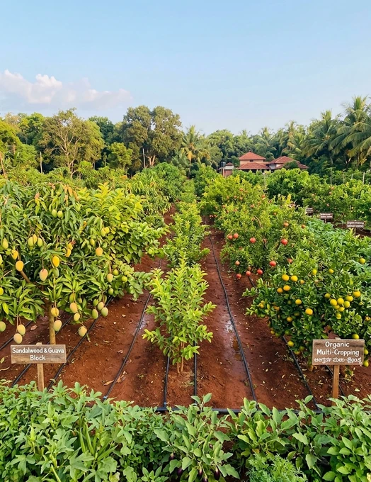
02 / Seasonal
Seasonal Fruits & Orchards — Cultivated for Demand
Carefully planned seasonal fruit plantations bring recurring value to the farm, with varieties selected based on regional suitability and prevailing market demand.

03 / Ecosystem
Livestock — Bringing the Farm Ecosystem to Life
Indigenous livestock forms part of the integrated farming model, supporting a more active, diversified and naturally connected farm environment.
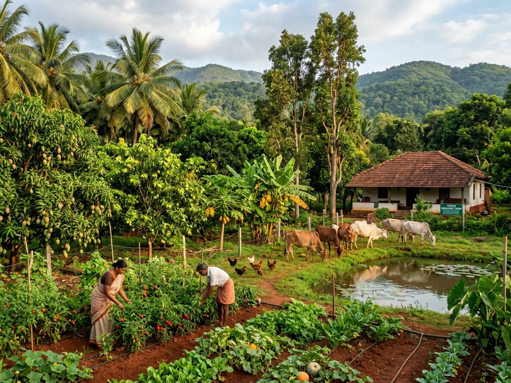
04 / Living ecosystem
Integrated Projects — Fruits, Flowers & Market Demand
Sandalwood, seasonal fruits, commercial flowers, companion crops, and livestock operate as cohesive integrated projects aligned with agricultural cycles and market requirements.
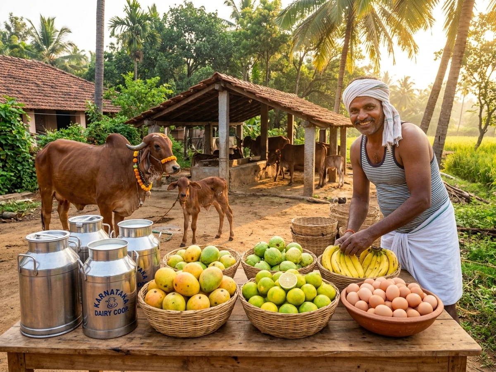
05 / Everyday value
Everyday Value from Seasonal Harvests & Integrated Projects
Farm produce, seasonal fruits, flower yields, and ongoing farm activities planned as per market demand add recurring productive activity to your farmland.
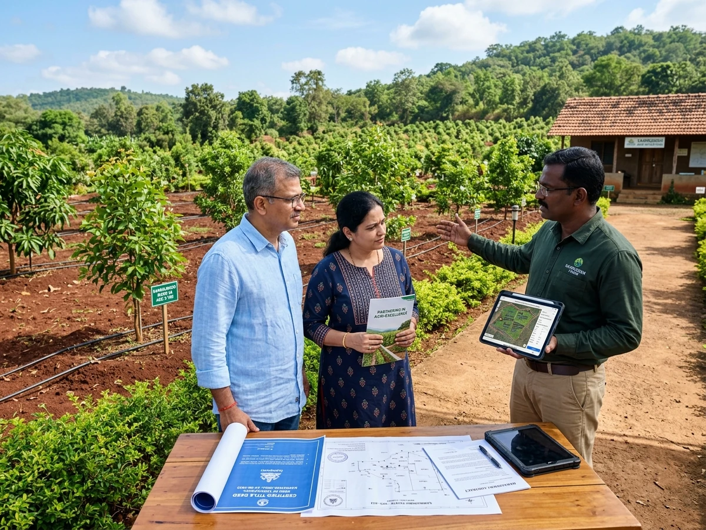
06 / Managed
You Own the Land. We Take Care of the Farm.
From plantation and irrigation to routine maintenance, livestock care and on-ground supervision, our team manages the farming operations — while ownership and documentation remain clear and transparent to you.
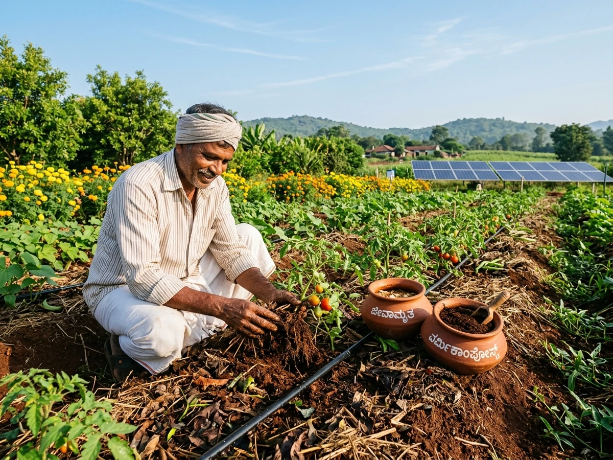
07 / Responsible
Responsible Farming. Healthier Land.
Our farming approach focuses on responsible land management, soil care, plantation health and practices designed to support the farm ecosystem over the long term.
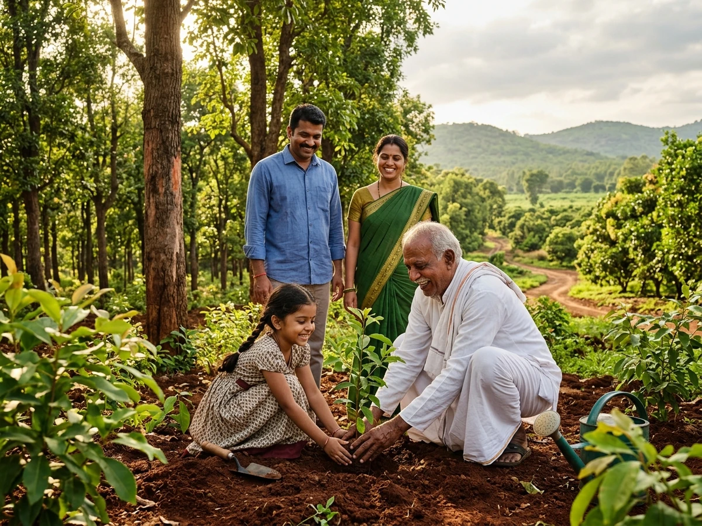
08 / Generational
Don’t Just Leave Them an Asset. Leave Them a Place They Remember.
A piece of land can mean more than ownership. It can become the place where your children experience open skies, trees, soil and the simple joy of being close to nature — and one day, something tangible you can pass on to the next generation.
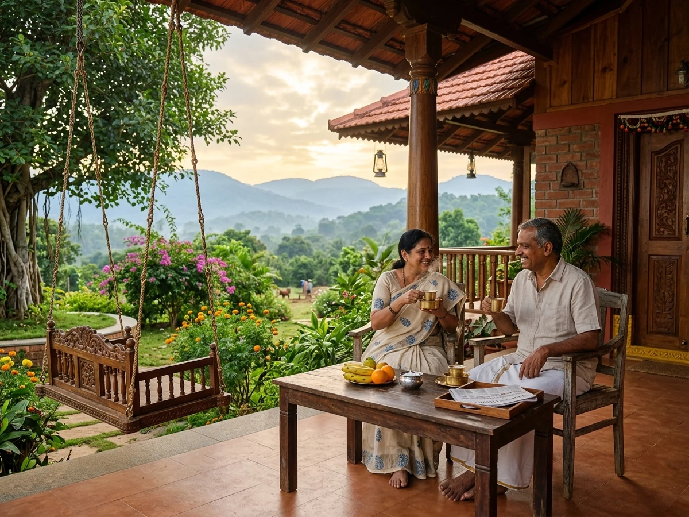
09 / Lifestyle
Your Land. Your Weekend. Your Escape.
Step away from city life and spend meaningful time on land you can call your own — surrounded by orchards, open spaces and a working farm environment.
04 Why Krushi Bhoomi
Farmland ownership, without having to become a farmer
You own the land.
We take care of the farm.
You own the land. Our on-ground team manages the farming ecosystem. Your family gets the opportunity to experience both.
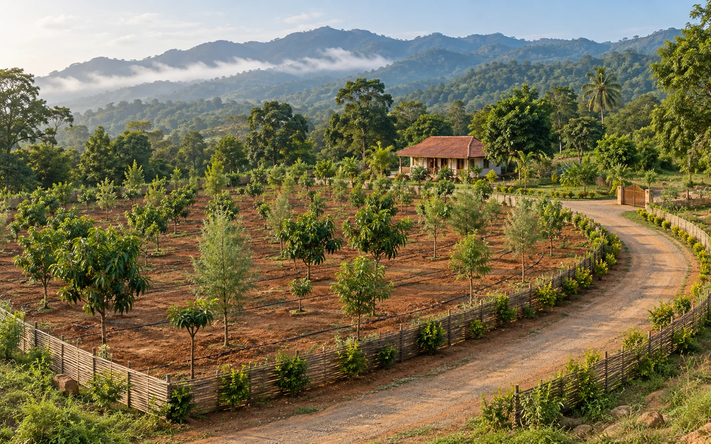
01 / Ownership
Registered Ownership
Each plot is sold through a registered sale deed in the buyer's name, backed by transparent documentation and clear title.
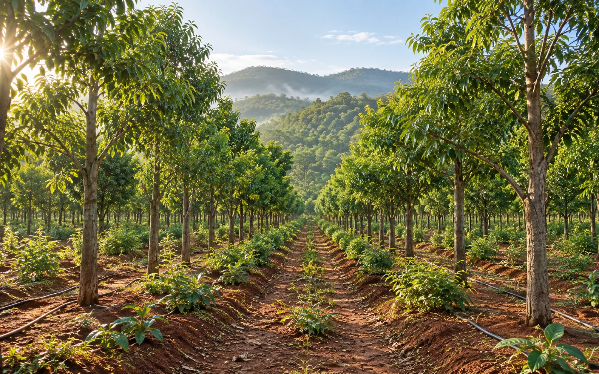
02 / Plantation
Managed Plantation
Sandalwood and diverse fruit orchards professionally planned, planted, and nurtured under scientific on-ground care.
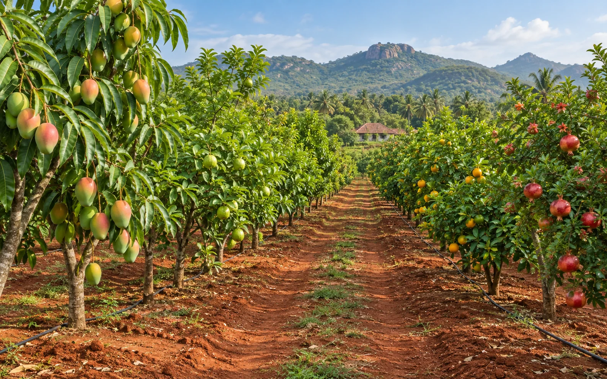
03 / Upkeep
Irrigation & Maintenance
Advanced drip irrigation, regular weeding, pruning and systematic farm upkeep without operational burden on owners.
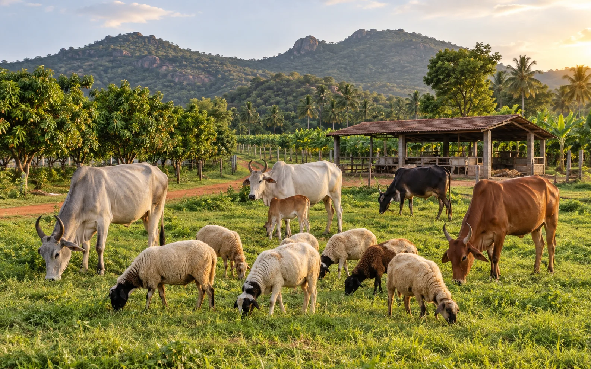
04 / Ecosystem
Integrated Farming
Indigenous cattle, sheep, companion crops and organic methods working together in a living agricultural ecosystem.
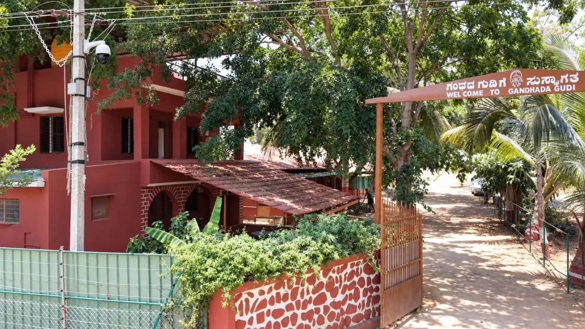
05 / Protected
Protected Even When You’re Away
Dedicated on-ground personnel, CCTV surveillance and perimeter security help keep the farm monitored while you are away.
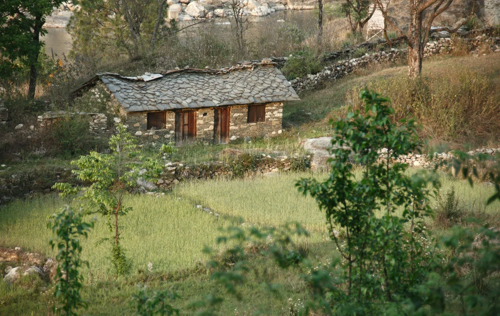
06 / Experience
Owner Visits & Stays
Spend time on land you can call your own, with comfortable farm cottages and open spaces for your family retreats.
05 Verification
Trust & Transparency
See the land. Review the documents.
Understand the model.
A farmland decision should begin with clarity. During your visit, our team will explain the plot, ownership process, project documentation, farm management scope, security arrangements and what is included, so you can evaluate the opportunity with confidence.
✓ 10-Point Checklist Available On Site
✓ Transparent Title & Records
01 / Title Records
✓ Available on visit
Land Title & Ownership
Review registered parent deeds, clear title documentation, and ownership records in the buyer's name.
02 / Demarcation
✓ Available on visit
Plot Boundaries & Survey
Clear identification of individual plot boundaries, corner stone markings, and applicable survey numbers.
03 / Registration
✓ Available on visit
Sale & Registration Process
Complete walkthrough of the registered sale deed process, mutation documentation, and timeline.
04 / Operations
✓ Available on visit
Farm Management Scope
Detailed breakdown of farming responsibilities, duration, on-ground maintenance schedule, and management charges.
05 / Agronomy
✓ Available on visit
Plantation & Livestock Plan
Comprehensive layout of sandalwood, seasonal fruit trees, indigenous cattle care, and realistic agronomy assumptions.
06 / Resources
✓ Available on visit
Water, Soil & Irrigation
Nutrient-dense red loam soil testing reports, Kaveri basin groundwater availability, and drip irrigation layout.
07 / Security
✓ Available on visit
Security & Monitoring Status
Review current operational status of dedicated security personnel, CCTV surveillance, and perimeter fencing.
08 / Stays
✓ Available on visit
Owner Access & Stay Terms
Transparent terms for owner cottage stays, clubhouse usage, and visiting your managed farmland whenever you like.
09 / Scope
✓ Available on visit
Inclusions & Exclusions
A crystal-clear statement outlining exactly what services, infrastructure, and amenities are included and what is excluded.
10 / Disclosures
✓ Available on visit
Agricultural Risk Disclosures
Honest disclosure of seasonal variables, agricultural dependencies, and factors affecting plantation outcomes.
06 Common questions
Know before you grow
Good land starts
with clear answers.
What exactly will I own?+
Each plot is sold through a registered sale deed, with the land ownership documented in the buyer’s name. Our team can walk you through the relevant ownership documents and project details before you make a decision.
What is the starting plot size and price?+
Managed farmland options currently start from approximately 6,500 sq. ft., with pricing from ₹19.4 lakh*. Larger plot options are also available.*Pricing, availability and plot configuration are subject to current inventory. Please confirm the latest details with our team.
Can I visit and stay at my farm?+
Yes. Owners can visit anytime, and shared cottages are available on the farm for owner stays.
Can I exit before sandalwood matures?+
Since the land is registered in the owner’s name, ownership is not dependent on the sandalwood maturity period. Any future sale or transfer would remain subject to applicable laws, documentation and transaction requirements.
Visits now open
Walk the land.
See the future.
Don’t decide from a brochure or a website. Visit Krushi Bhoomi. Walk through the land, understand the ownership, see the plantations, experience the farm and ask us every question before you decide.
See the land. Verify the details. Then decide.